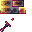
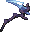
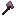
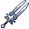
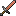

#c:tools/melee_weapon
物品标签 · 50 个已收录成员
标签成员 (50)
Cutlass
eternalnether:cutlass群星之怒
eternal_starlight:rage_of_stars热泉石剑
eternal_starlight:thermal_springstone_sword热泉石斧
eternal_starlight:thermal_springstone_axe热泉石战镰
eternal_starlight:thermal_springstone_scythe
eternal_starlight:thermal_springstone_hammer永冻石剑
eternal_starlight:glacite_sword永冻石斧
eternal_starlight:glacite_axe
eternal_starlight:glacite_scythe星钻剑
eternal_starlight:starlit_diamond_sword星钻斧
eternal_starlight:starlit_diamond_axe深银剑
eternal_starlight:deepsilver_sword深银斧
eternal_starlight:deepsilver_axe虚素剑
eternal_starlight:unrealium_sword虚素斧
eternal_starlight:unrealium_axe瘴紫石剑
eternal_starlight:malarite_sword瘴紫石斧
eternal_starlight:malarite_axe
eternal_starlight:pungency_fruit_axe星火剑
eternal_starlight:starfire_sword星火斧
eternal_starlight:starfire_axe星火战镰
eternal_starlight:starfire_scythe星火锤
eternal_starlight:starfire_hammer流璃剑
eternal_starlight:flowglaze_sword流璃斧
eternal_starlight:flowglaze_axe 流璃战镰
流璃战镰
eternal_starlight:flowglaze_scythe绯夜脂剑
eternal_starlight:amaramber_sword绯夜脂斧
eternal_starlight:amaramber_axe破碎之剑
eternal_starlight:shattered_sword 饥渴匕首
饥渴匕首
eternal_starlight:dagger_of_hunger闪烁剑
eternal_starlight:glistering_sword
eternal_starlight:glistering_greatsword 闪烁晨星
闪烁晨星
eternal_starlight:glistering_morning_star能量剑
eternal_starlight:energy_sword傀儡钢巨剑
eternal_starlight:golem_steel_greatsword水晶巨剑
eternal_starlight:crystal_greatsword月珥巨剑
eternal_starlight:moonring_greatsword 花瓣战镰
花瓣战镰
eternal_starlight:petal_scythe 魔骨阔剑
魔骨阔剑
eternal_starlight:bonemore 魔窟剑客之剑
魔窟剑客之剑
eternal_starlight:doomeden_rapier
everythingcopper:copper_sword?狩魔人之剑
irons_spellbooks:magehunter?破败焰形剑
irons_spellbooks:keeper_flamberge?破法者
irons_spellbooks:spellbreaker?紫晶刺剑
irons_spellbooks:amethyst_rapier?笼手阔剑
irons_spellbooks:claymore?苦痛刺剑
irons_spellbooks:misery?军团焰形剑
irons_spellbooks:legionnaire_flamberge?地狱战镰
irons_spellbooks:hellrazor?破败战镰
irons_spellbooks:decrepit_scythe 扳手
扳手
supplementaries:wrench
eternalnether:cutlass群星之怒
eternal_starlight:rage_of_stars热泉石剑
eternal_starlight:thermal_springstone_sword热泉石斧
eternal_starlight:thermal_springstone_axe热泉石战镰
eternal_starlight:thermal_springstone_scythe

热泉石锤eternal_starlight:thermal_springstone_hammer永冻石剑
eternal_starlight:glacite_sword永冻石斧
eternal_starlight:glacite_axe

永冻石战镰eternal_starlight:glacite_scythe星钻剑
eternal_starlight:starlit_diamond_sword星钻斧
eternal_starlight:starlit_diamond_axe深银剑
eternal_starlight:deepsilver_sword深银斧
eternal_starlight:deepsilver_axe虚素剑
eternal_starlight:unrealium_sword虚素斧
eternal_starlight:unrealium_axe瘴紫石剑
eternal_starlight:malarite_sword瘴紫石斧
eternal_starlight:malarite_axe

辛果斧eternal_starlight:pungency_fruit_axe星火剑
eternal_starlight:starfire_sword星火斧
eternal_starlight:starfire_axe星火战镰
eternal_starlight:starfire_scythe星火锤
eternal_starlight:starfire_hammer流璃剑
eternal_starlight:flowglaze_sword流璃斧
eternal_starlight:flowglaze_axe
流璃战镰eternal_starlight:flowglaze_scythe绯夜脂剑
eternal_starlight:amaramber_sword绯夜脂斧
eternal_starlight:amaramber_axe破碎之剑
eternal_starlight:shattered_sword
饥渴匕首eternal_starlight:dagger_of_hunger闪烁剑
eternal_starlight:glistering_sword

闪烁巨剑eternal_starlight:glistering_greatsword
闪烁晨星eternal_starlight:glistering_morning_star能量剑
eternal_starlight:energy_sword傀儡钢巨剑
eternal_starlight:golem_steel_greatsword水晶巨剑
eternal_starlight:crystal_greatsword月珥巨剑
eternal_starlight:moonring_greatsword
花瓣战镰eternal_starlight:petal_scythe
魔骨阔剑eternal_starlight:bonemore
魔窟剑客之剑eternal_starlight:doomeden_rapier

everythingcopper:copper_swordeverythingcopper:copper_sword?狩魔人之剑
irons_spellbooks:magehunter?破败焰形剑
irons_spellbooks:keeper_flamberge?破法者
irons_spellbooks:spellbreaker?紫晶刺剑
irons_spellbooks:amethyst_rapier?笼手阔剑
irons_spellbooks:claymore?苦痛刺剑
irons_spellbooks:misery?军团焰形剑
irons_spellbooks:legionnaire_flamberge?地狱战镰
irons_spellbooks:hellrazor?破败战镰
irons_spellbooks:decrepit_scythe
扳手supplementaries:wrench
使用该标签的配方
无